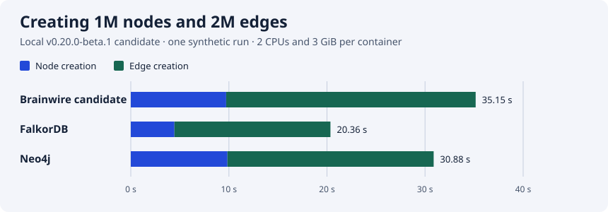

When you write
The server checks access, executes a transaction and commits changes through the storage layer. The write-ahead log supports recovery before memory buffers flush into disk tables.
OPEN SOURCE GRAPH DATABASE
A graph database for connected context. Bring people, projects, decisions and sources together for your applications and agents.
Experimental beta v0.20.0-beta.2 Check the boundaries before a shared deployment
QUICKSTART
You need Git and Docker with Compose. The demo creates a graph, starts the server and keeps its files in a named volume.
On macOS, you can use a running Colima engine with export DOCKER_CONTEXT=colima. You still need the Docker CLI and Compose plugin.
git clone --branch v0.20.0-beta.2 https://github.com/allandefraga/brainwire.git # brainwire-release-version
cd brainwire
export BRAINWIRE_IMAGE=ghcr.io/allandefraga/brainwire:v0.20.0-beta.2 # brainwire-release-version
docker compose -p brainwire-demo -f deploy/compose.demo.yaml \
up --no-build --pull always --wait --wait-timeout 900bolt://127.0.0.1:7687demoWRITE AND QUERY
Install this checkout's helper in a new environment. It connects to Brainwire over Bolt; a public PyPI package is not available yet.
python3 scripts/setup_python.pyRun the example with .venv-brainwire/bin/python while the Docker demo is running. If you chose a different host port, replace 7687 in the connection URL with that port.
from brainwire import connect
with connect("bolt://127.0.0.1:7687", "demo", auth=None) as graph:
graph.upsert_node("Customer", "customer-1", {"name": "Ada"})
graph.upsert_node("Segment", "segment-1", {"name": "beta"})
graph.upsert_edge(
("Customer", "customer-1"), "IN_SEGMENT", ("Segment", "segment-1")
)
print(graph.run_cypher("""
MATCH (c:Customer)-[:IN_SEGMENT]->(s:Segment)
RETURN c.name AS customer, s.name AS segment
"""))[{'customer': 'Ada', 'segment': 'beta'}]The demo already declares these types. For your own graph, start with an ontology. Use parameters for values and bounded batches for imports. If a write's commit outcome is unknown, reconcile it before retrying.
ARCHITECTURE
Your application connects over Bolt. The Rust engine executes the supported Cypher subset and stores graph records in RocksDB on persistent disk.
Persistent local volumeThe server checks access, executes a transaction and commits changes through the storage layer. The write-ahead log supports recovery before memory buffers flush into disk tables.
The engine uses the query's transaction view, visibility rules and available indexes. Query budgets and timeouts bound supported work; some query shapes still scan.
CAPABILITIES
Use the graph as a durable data layer. Your application supplies the data, the access model and any AI provider.
Nodes, typed relationships and properties. Read, create, merge, update and delete through the documented Cypher subset.
Query guide →Declare labels, allowed connections, properties and descriptions so applications can understand the graph's structure.
Catalog guide →Store explicit event nodes or keyed relationships. The Python example reads event pages by time and identity.
Timeline model →Explore ontology paths, narrow provider candidates to explicit IDs, and read visible records and sources. Graph reads use the caller's access controls.
Context API →Use Python batches or sync a local DuckDB table by comparing snapshots. The DuckLake example reads pinned changes. Both examples target standalone graphs.
DuckDB guide → DuckLake guide →Inspect indexes, query-memory counters, persistent files and recovery. Keep a tested checkpoint outside the running volume.
Backup and restore →USE CASES
Link documents, projects, people and tickets. Give an application the relationships behind a record, with sources it can reference.
Document → Project → OwnerStore decisions, facts and events using stable identities. Retrieve relevant context and keep access checks in the data path.
Agent → Decision → EvidenceFollow what depends on a service, what changed on a ticket or how a repository connects. Model the events your application needs.
Service → Deployment → EventBrainwire does not extract every relationship automatically. Use your pipeline, an explicit connector or your chosen model to map source data into the graph.
TERMINAL WORKSPACE
Open a read-only workspace against the Docker demo. The example below inspects the Customer and Segment written earlier.
docker compose -p brainwire-demo -f deploy/compose.demo.yaml exec brainwire \
brainwire shell --connect 127.0.0.1:7687 --graph demo \
--node-label Customer --entity-id customer-1 \
--edge-type IN_SEGMENT --target-label SegmentAllowed types and relationships
Query reservations and refusals
Declarations and readiness
Bounded outgoing relationships
Tab changes panes, r refreshes, ? opens help and q exits. Add --lang pt-BR for Portuguese. Protected servers require credentials and grants; memory telemetry requires instance-admin access.
OPERATIONS
A container restart keeps the named volume. A persistent volume is only one copy, so keep a separate backup and test restoring it.
# Check that the graph can serve a request
docker compose -p brainwire-demo -f deploy/compose.demo.yaml exec -T brainwire \
brainwire probe --mode ready
# Stop the demo and keep its named volume
docker compose -p brainwire-demo -f deploy/compose.demo.yaml downAdding --volumes to the stop command deletes the demo data. Start the same Compose project again to reuse its volume.
NATIVE CLI
For native use, build from source with Rust and the RocksDB native build dependencies: a C++ compiler, libclang, CMake and pkg-config.
cargo fetch --locked
cargo build --locked --offline -p brainwire-server --bin brainwire
./target/debug/brainwire --helpUse brainwire serve to start the server, brainwire cypher for offline queries and brainwire config show for configuration. The server owns the RocksDB directory while running; use Bolt or the connected TUI rather than opening that directory from another process.
SYNTHETIC BENCHMARK
Three local runs loaded 1 million nodes and 2 million relationships per engine. Brainwire was a locally built v0.20.0-beta.2 candidate, not the published release image.

All three completed indexed read checks and restarted after a process kill. Peak memory was not measured. These results describe a synthetic workload, not a production guarantee.
BETA BOUNDARIES
Start with rebuildable data and a tested backup. The beta has useful capabilities, with important deployment boundaries.
Budgets and pressure admission reject some work under load. A process-wide RSS ceiling and sustained representative capacity remain unqualified.
Memory guide →Cypher support is a documented subset. Nodes have one fixed label; ANN and BM25 indexes are not native features. Relationship property indexes are experimental and standalone-only.
Language support →Events are application-managed; native AS OF reads and automatic retention are unavailable. Shared deployments need auth and an encrypted boundary; native Bolt TLS is not implemented.
Three-voter quorum is experimental. Standard deployment templates run one instance. Local synthetic tests do not qualify multi-machine failover or production performance.
Replication guide →DOCUMENTATION
This static documentation website. It does not run Brainwire or host your graph. Preview it locally with python3 -m http.server 8000 --directory docs-site --bind 127.0.0.1, then open http://127.0.0.1:8000.